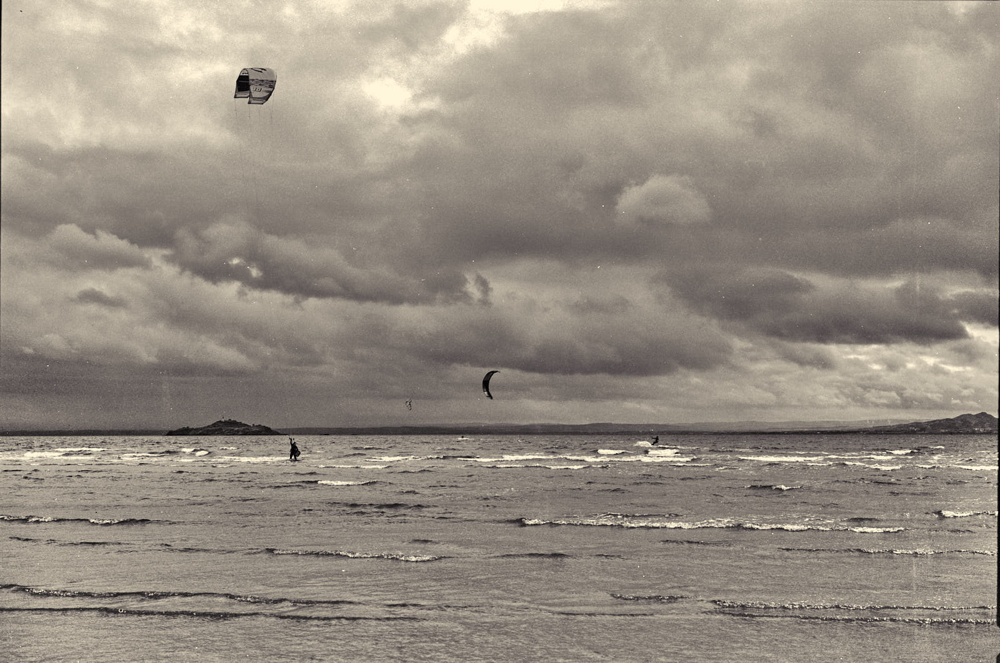
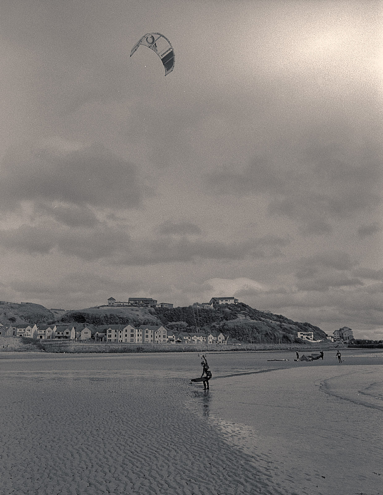

Learning about the CLA
 Dirty little sisters
Dirty little sisters
It’s been a few months now, since I started shooting film again. Needless to say, I’ve had some results I am very pleased with, and a whole series of disappointments and frustrations with myself on the way.
Focusing the Fuji
My monster medium-format Fuji GW690ii (above, centre) is a rangefinder on steroids, one of a series of cameras known as the “Texas Leicas” on account of their size. They were made for Japanese bus tour customers, who got a souvenir snap of the group as they visited Mt. Fuji, or Kyoto, which was developed and printed in time for the end of the trip. The huge 6cm x 9cm negatives it produces are large enough to render detail from the fixed 90mm lens even when enlarged and printed for the office wall. I bought a “near mint” one from ODA-Japan at the end of 2019 for over £500 including taxes and fees. From the listing:
Grade: Near Mint - Pre-owned, minimal signs of use. Appearance is very beautiful, tiny scuffs from normal use. It shows signs of use. *Please check photos. New Light Seals!! Optics:
Beautiful condition.
None of those words, I have learned, describe the camera. I had been disappointed with some of the photos taken with it. This, for example, taken on Kinghorn Beach, I hoped would be much clearer:
 Parasurfers, Kinghorn Beach Fuji GW690ii, Ilford Pan F Plus 50, f/11 at 1/60s
Sometimes sharpness doesn’t matter too much. This image, taken on a trip to the Faroes before the COVID lockdown, still looks pretty nice to me, not least because the Portra film I was using is just wonderful if you catch the light right:
Huts near Vágar Airport Fuji GW690ii, Kodak Portra 160, f/11 at 1/60s
Two Nikon FMs
My old Nikon FM, which went everywhere I did as I travelled with the military and then work from 1977 to the turn of the century, had been condemned by Lehmans as being beyond repair, specifically, the shutter mechanism, for which no spares are available. Its “FULLY TESTED EXCELLENT” replacement I had bought from SE Cameras (eBay) has never been right, showing light leaks and odd exposure variations. Here’s an example:
 Parasurfers at Kinghorn, Nikon FM, Nikon AI-s 28mm f/2.8, Ilford Delta 400, f/16 at 1/125s. Yellow filter.
The light leaks were particularly bad in a recent film - 20 of the 36 exposures were spoiled - and this is what triggered me to finally take action and get professional help.
The CLA
Practice makes perfect, they say, and they also say that a bad workman blames his tools. That said, I bet even Chippendale launched more than one of his chisels across the workshop on his learning journey. Ergo, I decided recently to get these cameras “CLA”-ed, or clean, lubricate, and adjust-ed.
I took the two Nikons and the Fuji to a little repair shop in Morningside, Edinburgh and asked, if possible, for them to make one good camera out of the two Nikons, and fix any focusing problems there might be in the Fuji. All I really wanted to know is whether the criticism I have had of recent photographs is all down to poor technique, or whether it might - just might - be something to do with the camera.
I picked up the three cameras today, all in excellent working order, with a clear list of things that had been done to them and an assurance (and a reasonable limited warranty) that they are “to specification”. Can’t wait to get out with some film in them.
Lessons learned
- Don’t buy from eBay and expect things to be as described
- Get cameras that are new to you, checked and serviced
- Get your CLA done by a reputable, local repair shop
Recommended suppliers
I buy (too much) film from Analogue Wonderland, and get it developed at AG Photolab, who have been brilliant in helping me make sense of some of the recent exposure problems.
Cameratiks in Edinburgh is staffed by calm, competent and polite people who know what they are doing. They are not cheap, nor are they expensive: you can buy quality digital and film gear there, and have them offer decent advice on the basis that you will go back there next time you need anything. That’s my kind of business.